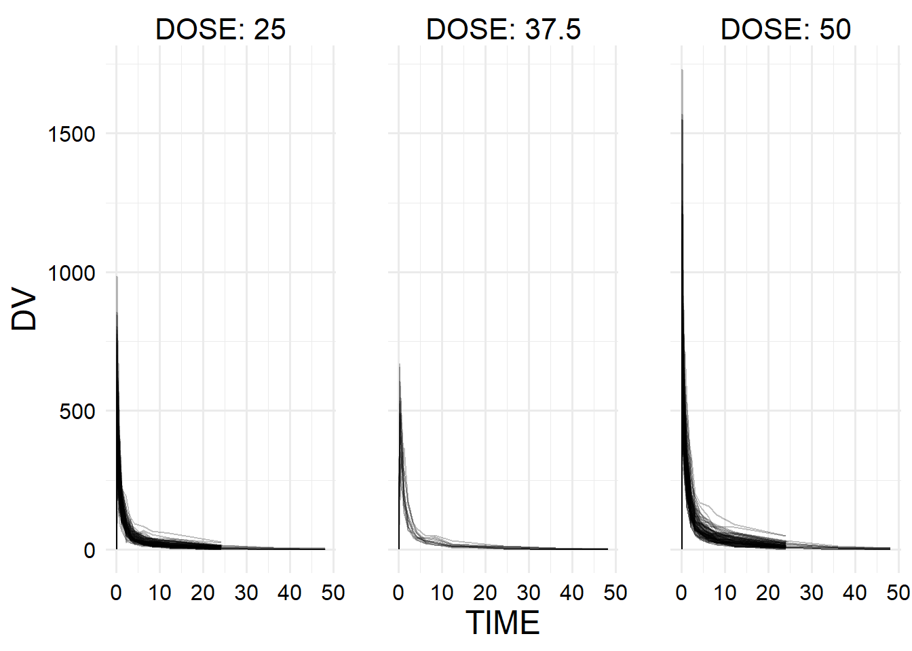
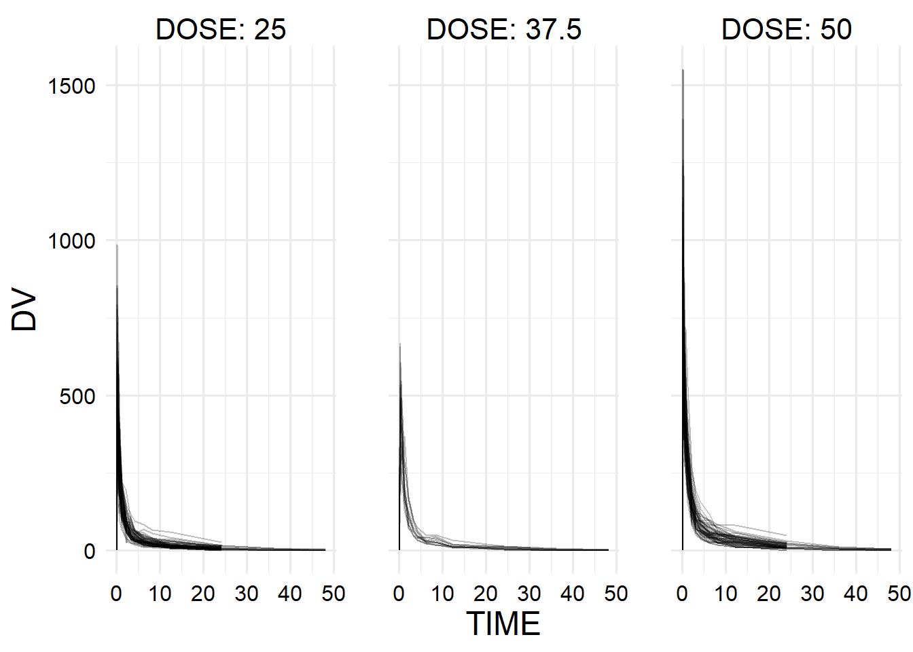

# Declare package dependencies
box::use(
readr,
curl,
ggplot2,
hgp
)
# Set global ggplot2 theme
ggplot2::theme_set(hgp::theme_ms())Model Fitting Exercise
In this exercise, we’ll practice data fitting using the Mavoglurant drug candidate data. More information can be found in the assignment description.
Data processing and exploration
First we need to get the data from the github.
# If the local copy already exists, use that. Otherwise download it.
file_path <- here::here("fitting-exercise", "raw-data.Rds")
chk <- file.exists(file_path)
if (isTRUE(chk)) {
raw_data <- readr::read_rds(file_path)
} else {
# Read the data from the GitHub page
data_url <- paste0(
"https://raw.githubusercontent.com/metrumresearchgroup/BayesPBPK-tutorial/",
"master/data/Mavoglurant_A2121_nmpk.csv"
)
raw_data <- readr::read_csv(
data_url,
# The parser will guess that all variables are numeric, but this is not
# quite correct.
col_types = "cffffddfddffdffdd"
)
# Save local copy
readr::write_rds(raw_data, file_path)
}
skimr::skim(raw_data)| Name | raw_data |
| Number of rows | 2678 |
| Number of columns | 17 |
| _______________________ | |
| Column type frequency: | |
| character | 1 |
| factor | 9 |
| numeric | 7 |
| ________________________ | |
| Group variables | None |
Variable type: character
| skim_variable | n_missing | complete_rate | min | max | empty | n_unique | whitespace |
|---|---|---|---|---|---|---|---|
| ID | 0 | 1 | 3 | 3 | 0 | 120 | 0 |
Variable type: factor
| skim_variable | n_missing | complete_rate | ordered | n_unique | top_counts |
|---|---|---|---|---|---|
| CMT | 0 | 1 | FALSE | 2 | 2: 2480, 1: 198 |
| EVID | 0 | 1 | FALSE | 2 | 0: 2480, 1: 198 |
| EVI2 | 0 | 1 | FALSE | 3 | 0: 2480, 1: 120, 4: 78 |
| MDV | 0 | 1 | FALSE | 2 | 0: 2427, 1: 251 |
| AMT | 0 | 1 | FALSE | 4 | 0: 2480, 25: 94, 50: 92, 37.: 12 |
| OCC | 0 | 1 | FALSE | 2 | 1: 1665, 2: 1013 |
| RATE | 0 | 1 | FALSE | 5 | 0: 2480, 150: 93, 300: 92, 225: 12 |
| SEX | 0 | 1 | FALSE | 2 | 1: 2335, 2: 343 |
| RACE | 0 | 1 | FALSE | 4 | 1: 1669, 2: 772, 88: 185, 7: 52 |
Variable type: numeric
| skim_variable | n_missing | complete_rate | mean | sd | p0 | p25 | p50 | p75 | p100 | hist |
|---|---|---|---|---|---|---|---|---|---|---|
| DV | 0 | 1 | 179.93 | 226.28 | 0.00 | 23.52 | 74.20 | 283.00 | 1730.00 | ▇▂▁▁▁ |
| LNDV | 0 | 1 | 4.08 | 1.88 | 0.00 | 3.16 | 4.31 | 5.64 | 7.46 | ▃▃▇▇▅ |
| TIME | 0 | 1 | 5.85 | 8.91 | 0.00 | 0.58 | 2.25 | 6.36 | 48.22 | ▇▁▁▁▁ |
| DOSE | 0 | 1 | 37.37 | 12.05 | 25.00 | 25.00 | 37.50 | 50.00 | 50.00 | ▇▁▁▁▇ |
| AGE | 0 | 1 | 32.90 | 8.87 | 18.00 | 26.00 | 31.00 | 40.00 | 50.00 | ▆▇▅▅▅ |
| WT | 0 | 1 | 83.16 | 12.48 | 56.60 | 73.30 | 82.60 | 90.60 | 115.30 | ▂▇▇▅▁ |
| HT | 0 | 1 | 1.76 | 0.08 | 1.52 | 1.71 | 1.78 | 1.82 | 1.93 | ▁▃▆▇▃ |
Now we want to make some exploratory plots. For the first part, we need to make a plot of the outcome variable DV vs TIME stratified by DOSE using ID as a grouping factor.
raw_data |>
ggplot2::ggplot() +
ggplot2::aes(
x = TIME,
y = DV,
group = ID
) +
ggplot2::geom_line(alpha = 0.25, show.legend = FALSE) +
ggplot2::facet_wrap(facets = ggplot2::vars(DOSE), labeller = "label_both")
OK, we can see clearly that there are less people in the 37.5 dose group than the other two, and in the other two there were also multiple trajectories that stop early for some reason. Let’s take a quick look at how many observations we have for each person.
ID_counts <- dplyr::count(raw_data, ID) |> dplyr::pull(n) |> table()
knitr::kable(ID_counts)| Var1 | Freq |
|---|---|
| 13 | 6 |
| 15 | 3 |
| 16 | 33 |
| 25 | 1 |
| 26 | 77 |
There were 120 different subjects recorded in the dataset, and the majority were observed 26 times, with some systematic patterns.
Next we need to keep only the OCC = 1 observations.
dat_occ1 <- raw_data |>
dplyr::filter(OCC == 1)Now let’s remake that plot.
dat_occ1 |>
ggplot2::ggplot() +
ggplot2::aes(
x = TIME,
y = DV,
group = ID
) +
ggplot2::geom_line(alpha = 0.25, show.legend = FALSE) +
ggplot2::facet_wrap(facets = ggplot2::vars(DOSE), labeller = "label_both")
This plot looks slightly different, which indicates that we were likely aggregating different trajectories together – it seems that some patients were observed multiple times.
Aggregating time values
Since we don’t want to do the time-series analysis, we’ll aggregate here. First we want to calculate the sum over all the non-zero time points.
dat_t_sums <- dat_occ1 |>
# First remove all of the time point zeroes
dplyr::filter(TIME != 0) |>
# Aggregate over each individual
dplyr::group_by(ID) |>
# Sum up the outcome variables
dplyr::summarize(Y = sum(DV))Now we’ll filter so we only have the time-zero values, and we’ll join our new variable back to that dataset.
dat_time_zero <- dat_occ1 |>
dplyr::filter(TIME == 0)
dat_joined <- dplyr::left_join(dat_time_zero, dat_t_sums, by = "ID")Now since we already have race and sex stored a factors we just need to select the factors that we need for modeling.
dat_models <- dat_joined |>
dplyr::select(Y, DOSE, RATE, AGE, SEX, RACE, WT, HT) |>
dplyr::rename_with(tolower) |>
dplyr::mutate(dplyr::across(dplyr::where(is.factor), forcats::fct_drop))
dplyr::glimpse(dat_models)Rows: 120
Columns: 8
$ y <dbl> 2690.52, 2638.81, 2149.61, 1788.89, 3126.37, 2336.89, 3007.20, 27…
$ dose <dbl> 25.0, 25.0, 25.0, 25.0, 25.0, 25.0, 25.0, 25.0, 25.0, 25.0, 25.0,…
$ rate <fct> 75, 150, 150, 150, 150, 150, 150, 150, 150, 150, 150, 150, 225, 2…
$ age <dbl> 42, 24, 31, 46, 41, 27, 23, 20, 23, 28, 46, 22, 43, 50, 19, 26, 3…
$ sex <fct> 1, 1, 1, 2, 2, 1, 1, 1, 1, 1, 1, 1, 2, 2, 1, 1, 1, 1, 1, 1, 1, 1,…
$ race <fct> 2, 2, 1, 1, 2, 2, 1, 88, 2, 1, 1, 1, 1, 1, 2, 2, 1, 1, 1, 1, 1, 1…
$ wt <dbl> 94.3, 80.4, 71.8, 77.4, 64.3, 74.1, 87.9, 61.9, 65.3, 103.5, 83.0…
$ ht <dbl> 1.769997, 1.759850, 1.809847, 1.649993, 1.560052, 1.829862, 1.850…EDA
put some EDA plots here
Model fitting
library(tidymodels)── Attaching packages ────────────────────────────────────── tidymodels 1.1.1 ──✔ broom 1.0.5 ✔ recipes 1.0.10
✔ dials 1.2.1 ✔ rsample 1.2.0
✔ dplyr 1.1.4 ✔ tibble 3.2.1
✔ ggplot2 3.4.4 ✔ tidyr 1.3.1
✔ infer 1.0.6 ✔ tune 1.1.2
✔ modeldata 1.3.0 ✔ workflows 1.1.4
✔ parsnip 1.2.0 ✔ workflowsets 1.0.1
✔ purrr 1.0.2 ✔ yardstick 1.3.0 ── Conflicts ───────────────────────────────────────── tidymodels_conflicts() ──
✖ purrr::discard() masks scales::discard()
✖ dplyr::filter() masks stats::filter()
✖ dplyr::lag() masks stats::lag()
✖ recipes::step() masks stats::step()
• Use suppressPackageStartupMessages() to eliminate package startup messagesy_ap_recipe <- recipe(y ~ ., data = dat_models)
y_dose_recipe <- recipe(y ~ dose, data = dat_models)
lm_spec <- linear_reg() |>
set_mode("regression") |>
set_engine("lm")
y_dose_wf <- workflow() |>
add_model(lm_spec) |>
add_recipe(y_dose_recipe)
y_ap_wf <- workflow() |>
add_model(lm_spec) |>
add_recipe(y_ap_recipe)
y_dose_fit <- fit(y_dose_wf, data = dat_models)
y_dose_aug <- augment(y_dose_fit, dat_models)
yardstick::rmse(y_dose_aug, truth = y, estimate = .pred)# A tibble: 1 × 3
.metric .estimator .estimate
<chr> <chr> <dbl>
1 rmse standard 666.yardstick::rsq(y_dose_aug, truth = y, estimate = .pred)# A tibble: 1 × 3
.metric .estimator .estimate
<chr> <chr> <dbl>
1 rsq standard 0.516y_ap_fit <- fit(y_ap_wf, data = dat_models)
y_ap_aug <- augment(y_ap_fit, dat_models)Warning in predict.lm(object = object$fit, newdata = new_data, type =
"response", : prediction from rank-deficient fit; consider predict(.,
rankdeficient="NA")yardstick::rmse(y_ap_aug, truth = y, estimate = .pred)# A tibble: 1 × 3
.metric .estimator .estimate
<chr> <chr> <dbl>
1 rmse standard 583.yardstick::rsq(y_ap_aug, truth = y, estimate = .pred)# A tibble: 1 × 3
.metric .estimator .estimate
<chr> <chr> <dbl>
1 rsq standard 0.630sex_ap_recipe <- recipe(sex ~ ., data = dat_models)
sex_dose_recipe <- recipe(sex ~ dose, data = dat_models)
log_spec <- logistic_reg() |>
set_mode("classification") |>
set_engine("glm")
sex_dose_wf <- workflow() |>
add_model(log_spec) |>
add_recipe(sex_dose_recipe)
sex_ap_wf <- workflow() |>
add_model(log_spec) |>
add_recipe(sex_ap_recipe)
sex_dose_fit <- fit(sex_dose_wf, data = dat_models)
sex_dose_aug <- augment(sex_dose_fit, dat_models)
yardstick::accuracy(sex_dose_aug, truth = sex, estimate = .pred_class)# A tibble: 1 × 3
.metric .estimator .estimate
<chr> <chr> <dbl>
1 accuracy binary 0.867yardstick::roc_auc(sex_dose_aug, truth = sex, .pred_1)# A tibble: 1 × 3
.metric .estimator .estimate
<chr> <chr> <dbl>
1 roc_auc binary 0.592sex_ap_fit <- fit(sex_ap_wf, data = dat_models)
sex_ap_aug <- augment(sex_ap_fit, dat_models)Warning in predict.lm(object, newdata, se.fit, scale = 1, type = if (type == :
prediction from rank-deficient fit; attr(*, "non-estim") has doubtful cases
Warning in predict.lm(object, newdata, se.fit, scale = 1, type = if (type == :
prediction from rank-deficient fit; attr(*, "non-estim") has doubtful casesyardstick::accuracy(sex_ap_aug, truth = sex, estimate = .pred_class)# A tibble: 1 × 3
.metric .estimator .estimate
<chr> <chr> <dbl>
1 accuracy binary 0.958yardstick::roc_auc(sex_ap_aug, truth = sex, .pred_1)# A tibble: 1 × 3
.metric .estimator .estimate
<chr> <chr> <dbl>
1 roc_auc binary 0.983